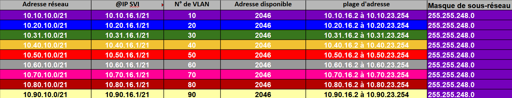
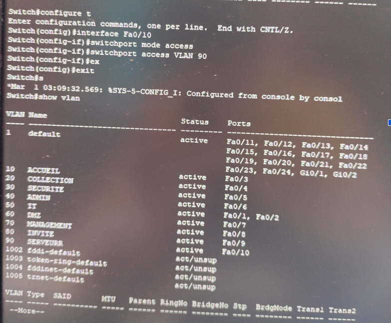

Je m’appelle Walid Ladj, étudiant en BTS SIO option SISR (Solutions d'Infrastructure, Systèmes et Réseaux).
J'ai d'abord débuté mon parcours en Licence BCST option LAS (Université Paris-Saclay). Cependant, les travaux en laboratoire et l'aspect très théorique de cette filière ne me correspondaient pas. Je recherchais une formation concrète, tournée vers la pratique et la technique. C'est ainsi que je me suis réorienté vers l'informatique et les infrastructures réseau, un domaine qui me passionne au quotidien.
Mon objectif professionnel est de devenir technicien / administrateur réseau.
MuséoConnect est un projet de simulation d'une infrastructure réseau. L'objectif était de mettre en place une infrastructure organisée avec différents réseaux et VLANs. J'ai participé à la réalisation du plan d'adressage IP, à la création des VLANs et à la configuration des switchs.
✓ Plan d'adressage IP
✓ Création des VLANs
✓ Configuration du switch

Plan d'adressage IP

Vérification des VLANs sur le commutateur
04 — EXPÉRIENCE
Stage — SNCF Réseau
ESTI IDF — Unité de Production Informatique (LAN-PRG)
SNCF Réseau
Au sein de l'équipe LAN-PRG (Paris Rive Gauche), j'ai participé aux interventions de maintenance et au déploiement des équipements réseau dans les gares du secteur.
Missions principales
Étude de l'architecture réseau : Analyse des schémas réseau des gares et sites pour préparer les interventions.
Paramétrage et préparation du matériel : Configuration de commutateurs selon les standards de SNCF Réseau.
Déploiements sur le terrain : Installation physique des équipements en gare, raccordements et tests de connectivité.
Supervision : Suivi du parc et détection d'alertes en temps réel via l'outil Spectrum.
Mission détaillée : Préparation et configuration d'un switch pour le site d'Orly Ville
Dans le cadre du renouvellement d'équipements, reprise et adaptation de la configuration d'un ancien switch vers un nouveau modèle plus récent pour la zone de télécommunication.
Étude & Adaptation : Modification et adaptation de l'ancien fichier de configuration.
Liaison de gestion : Configuration IP temporaire sur le PC (1.1.1.1/24) et le switch (1.1.1.2/24) via câble Console.
Transfert TFTP : Raccordement en RJ45, transfert du fichier de configuration via le protocole TFTP, sauvegarde et validation après redémarrage.
05 — VEILLE TECHNOLOGIQUE
80 % des cyberattaques exploitent les mots de passe, et après ?
Ce chiffre, tiré de plusieurs articles que j’ai suivis en 2025-2026, résume l'enjeu majeur de la gestion des identités dans nos infrastructures informatiques. Ma veille s'est portée sur l'évolution de ces risques et les solutions adoptées par le secteur.
LE CONSTAT DE DÉPART
Le mot de passe : toujours la première faille
Phishing, force brute, réutilisation d'identifiants — les attaques ciblant les mots de passe restent la porte d'entrée principale des intrusions. Le défi principal réside dans la vulnérabilité du facteur humain et des politiques d'accès trop faibles.
PhishingForce bruteRéutilisation d'identifiants
LA RÉPONSE DU SECTEUR
MFA et passwordless : deux étapes vers la fin du mot de passe
Si le MFA est devenu un standard indispensable, ses vulnérabilités (MFA fatigue) poussent le secteur vers le Passwordless. La réponse repose sur l'adoption des Passkeys via le standard FIDO2 pour éliminer la saisie de mots de passe.
Articles et rapports suivis — avec ce que j'en retiens
3 sources · 2025-2026
Pour chaque article, j'explique ce que j'ai retenu et comment cela alimente ma réflexion sur la sécurité des identités.
CYBERSÉCURITÉ MANAGEMENT2 avril 2026La double authentification face au basculement des identités▼
Cet article analyse l'évolution des attaques ciblant la double authentification (MFA fatigue, contournement de session) et explique pourquoi la simple protection par second facteur ne suffit plus face aux menaces modernes.
TALENT BS26 février 20265 réflexes indispensables pour renforcer la cybersécurité en 2026 — dont le passwordless▼
Mise en avant de la transition vers le "passwordless" (passkeys, FIDO2) pour supprimer l'élément le plus vulnérable : la saisie et le stockage des mots de passe traditionnels.
LETO LEGAL27 janvier 2026Cybersécurité 2026 : 5 bonnes pratiques — 80 % des attaques exploitent les mots de passe▼
Ce guide confirme que 80 % des intrusions en 2025 exploitent des mots de passe faibles, volés ou réutilisés. Utiliser un mot de passe simple équivaut techniquement à laisser la clé sous le paillasson.